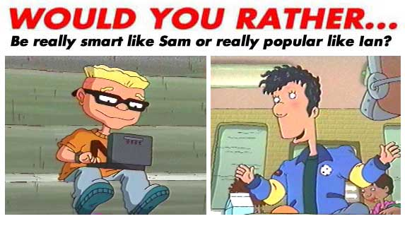

MARIA - smart
Rill - Smart
mmpayne - sam duh
Chloee - Ian
HOTBOY - smart cause can got collage at 9 years old
Marrit - I would be popular 'cuz i'm smart already :)
Amanda - Ian duh!!!!
Valentina - I'm already popular!! Now, to get my math grades up a bit higher.....
Spoiltrotten - smart
erika - popular
Valmonte - ill rather be smart
BOOBA - i will so be popular
ana - i would rather be popular like ian
LilCutesy - Really popular like Ian.
Peachy - smart
kim - be popular like ian.
Felicia - Be really popular like Lan.
Alan - Smarter, you could skip grades and Graduate collage, then get a great job and become like a millionaire.
Krystal - Smart like Sam cause I'm almost failing Social Studies.
stunner1 - Being smarter would definately be better than being popular. Popularity is highly overated. Where is it going to get you in life?? No where. If you have a brilliant mind... well than, the sky is the limit. ( Having a good cross between both would be the best though!!)
Autumn - Popular! I already am smart.
PrincessSepy - Smart
Crystal - smart
Shell:Smart like da squid! cuz I wanna get a heaps cool job (after I go to uni)!!!!!!!
Amanda - I would rather be as popular as Ian so everybody would know me!!!!
HBeggs - Popular
Phoenix: Smart like Sam coz all i need to be popular are my true friends
Cheryl - WELL SINCE I M ALREADY REALLY SMART ILL PICK IAN
Molly - Smart like Sam DUH!!!!!!!!!!!!!
Mindy - I would rather be smart because u can get a good life and better educaion that way being popular doesnt help u at all theres no point
Wassup - ian because i like being popular and i am all ready smart !!!!!!!so!!!!!!!!
Watson - my math grde is low so smart ian is dummer than a box of rocks
BRIT - SAM
Drossman - Definelently popular.
Kuliraga - Popular
Angelfirex - Popular! Smartness comes in second to me!
Jim - Popular like Lan
tigger - smart sam {or squid!}
Katie - smart, duh! popular doesnt mean anything!!!
Lyssa - Really smart (cuz sam is really smart and he's sweet and has a really close group of friends)
Jazz - Sam
KATIE - SMART
nicky - im already popular so smart like the wierd little man
Ghstly - popular, cause i am already smart
Hazardjade - Smart.
ronell - Smart.
alisse - popular i already get top mark in all the tests
MATTHEW - P.O.P.U.L.A.R. LIKE IAN OF COUSE
Elise - SMART LIKE SAM COZ THERES MORE 2 LIFE THAN LOOKS!!!!!
Jennifurface - When I was in school, I excelled in my schoolwork, but not so in my social skills. Still, being smart is MUCH more important, so that's my choice, hands down.
Natalya - smart you grow up get a job you cant get a job being popular
melissa - Smart like Sam. I'm very bad in math.
LilBlue - i would rather be smart
Emma: Smart cuz popularty aint everything
Becky - Smart cuz if you're popular and thick you can't go to college and get a good job and then get loads of MONEY!!!!!!!!!
Meniquenicole - Popular like Ian!!!
cynthia: smart
Elizabeth - I want to be smart because it puts you in a better spot for life if you know what to do if something happens.
Hayley - I would rather be popular. I am already in all Gifted and Talented classes like Sam.
rugrats - HECK...I WOULD BE SMART BECAUSE SMARTS WILL TAKE ME FARTHER IN LIFE AND HE HE EH
kyle - I would like to be smart like Sam
Djaj8 - SMART!!!!!!!!!
Nichelle - really smart like Sam so I could be a scientist when I grow up.
Spoiledfirl - POPULAR
Dianne - I would rather be a popular kid I am all ready smart
Raszuana - smart ddduuuuhhh!!!!
Tuy - popular like Ian.
Daisy Girl - Smart All A's !!!!!!!!!!
Sierrah - Smart.
Amanda - Popular!!!! I am all ready smart!!!!!
Tlrice - i am already smart, so popular
WSmithAlexander - I would be popular like Ian because I'm the kind of person who enjoys being admired and treated with respect by others. Popularity seems important in my opinion especially in High School because if you are too smart you spend too much time doing school work and so you would never really see people that much.
Miranda - Sam because being popular is not everything.
Stephanie - Sam!!!!!!
Nyoshimi - i'll be SMARTER than the Sqiud-inator
Reno - sammy
Saeed - Smart like sam
Christine - be really smart like sam
Lauren - SMART, I'M ALREADY POPULAR ENOUGH. EVERYONE LIKES ME
Ipinkus - Popular!
Kimmie M. - Smart
Antonio - To be Smart would be great!
Kevin - I like be smart like sam
My1stborn - sam
William - smart
ndaless - lan
Angelia: SMART
Lilangel2oo9: popular
Dwita - I would like to be like Sam clever.
Anee - ian defo essssss good lopokin 4 a cartoon and popula of course
Ajh - Popular, I am already smart!
Rocketgirl - smart
Kimberly - definitely popular like Ian!
Joy - popular, because Im already smart!!!!!!!!!!!!!!!!!!!!
Stephen - Sam cause I cant stand ’popular’ people. And also I’d like to get a good job and earn heaps of money to buy heaps of kkkoooooooooollllllllll clothes!!!!!!!!!!!!!!!
Doug - smart
Ashley - i am sort of like Sam,because i am in advanced clases,but not that smart. plus it would give me a better chance of winning a scholership. plus i would be top in all my clases and i love school, i just hate the waking up part,ha ha! :)
RTKSCHERR - I'd rather be really smart like Sam because although I wouldn't mind being popular it would be cool to be really smart in every single subject, wouldn't it?
Lenny - I rather be smart like sam because that way you choose whatever job you want in the future. you can still have friends without being popular. Just be friends smart kids. You education will help you more then friends. Your friends aren't going to give you money in the future for free. With an good job that came from good education you can bring your own money home. Your friends today may not be your friends tomorrow.
fox - I'd so much rather be popular. Being popular is everything to me.
Claudia - Since I'm a girl, I'll just switch it to ....as popular as courtney, or as smart as reggie(she's smart, right?), I would like to be popular!
chisoko - smart
coolgal - Ian cause I'm like Ian
SierraS: Well I am really smart (Straight A's) but I guess I wouldn't mind being the MOST popular gurl! I hope I don't sound like I'm boasting!
Murray -ian cuz i alredy am the most popular kid for blocks alredy plus being smart is nothing
Sakera - smart like sam.
rons - i would be smart like sam dullard because he likes computers and complaining. and he has a new squid named oliver van rossum who is also smart. my advice, i'd be smart like sam.
Krissy - SAM cuz he is into comps. Ian is just another "Pop-u-lar jerk
Hart - Really popular like Ian! Except the fact I'm a girl so, like Courtney Gripling!
Scott - Popular of course! When you're popular you have a much better chance of having friends.
myapplestore - Smart like Sam
louise - Popular
mustafa - smart like sam.
CHRISTIAN - SMART
Mattison - *IAN*
Matilda - they are both really good traits, but i think i'll have to go with being popular
ck - sam
Grace - SAM
Jacob - I am already as smart as Sam and I'm as popular as Lan but, I think I would rather be Sam because of the cool things he always uses.
Marlene - Really popular like Ian
Virginia- I'd rather be smart like Sam because your grades, which lead you to your whole life, are more important then popularity, which usually doesn't last forever.
Emily - Smart
Jasmine-Well i'm already popular and i have a good iq already so i'd choose even more popular cuz i would'nt want to be a geek and loose my rep lol more popular
Mel-C - id be popular and hangout at the mall instead of going to comp usa all day long!
Jennifer - popular like lan
grasshoppa101 - Popular
Anthony - smart cuz i dont like being crowded and ian is airhead.
Lawson - smart who cares about being popular u should worry about your grade.
Pippsi - popular
Annie - Smart like Sam
Trixy - SMART
anil - smart like sam
Stacie - popular!!!
Chris - Smart. I'm smart right now, but I want a IQ of 130(which is genius) I made to my school Knowledge Master team.
Stylyn4LYF - sam
Nic - I'd probably say really smart because thats gonna help me in the long term education is more important what people think of you
Louise - Smart like Sam because I'm already popular!
Chelsea H - Smart like Sam so I can control my life better .
JOR - SMART
RJGORJ - smart so i can b successful in life
Zara - I'd rather be smart because i'm kinda shy and don't like a hole lot of people courding me because it gets me nerves and also I don't want ta have to perform just to be popular
flower - smart, it'll help my future, either way I'm already Smart, and Popular
Chelsea-Smart like sam because being popular dosen't get you into college and it dosen't get you good grades
Anne - Smart like Sam, because I wouldn't want to be really popular.
Hillary - Smart because then I would get better grades and get to be a graphic artist!
tobyclara - smart like sam, i mean how is he populer HE IS UGLY!!!
Mason - REALLY POPULAR!!!
Lindsay - Well.. I already am really popular.. can I say more poular?
Ashlee - Be really smart like SAM!! Besides SAM is way cooler then Ian!
Brooks - POPULAR!!!!!!!!!!!!!!!!!!!!!!!!!!!
Bkremer - popular
Blair - Popular
momsprincess06 - I would rather be smart! Sam will go far in life...but what can popularity buy you?
Allison - Popular
Alex - Popular
mallory - ian
Nicky - Popular
Tara - popular
EHill - I would be both!!!! (OK, no more answers will be posted that say neither one OR both! You have to choose one or the other! - The Webmaster)